Обо мне
Профессия ученого - это строительство собственного пространства, где происходит обнажение души и чувств, способностей и творчества, где неизбежно строится мостик единения с историей научных исследований твоих предшественников.
В 1969 году окончил математический факультет Белорусского государственного университета. В период 1969-2012 гг. работал на кафедре методов оптимального управления (стажер исследователь, ассистент, старший преподаватель, доцент) факультета прикладной математики и информатики Белорусского государственно университета.
В 2000 г. на конкурсной основе получил звание профессора во Франции.
С 2012 года и по настоящее время – профессор кафедры аналитической экономики и эконометрики экономического факультета Белорусского государственного университета.
К настоящему времени опубликовал около 160 научных работ, в том числе 10 научных изданий и два учебных пособия.
Научное направление - теория устойчивости движения. Первые творческие исследования начались в студенческие годы под руководством академика НАН Республики Беларусь Е.А. Барбашина в 1966-1969 гг. Они посвящены задаче о существовании, единственности и устойчивости разрывных предельных циклов (периодических режимов). Такие движения возникают при изучении колебаний импульсных динамических систем при моделировании работы двигателей большой мощности. Эти исследования легли в основу кандидатской диссертации «Исследование одной системы второго порядка с цилиндрическим фазовым пространством при импульсных возмущениях», защищенной в 1972 г.
В 1975-1976 гг. был на научной стажировке в Парижском университете (Paris-6).
С конца 70-х годов занимаюсь разработкой метода знакопостоянных функций Ляпунова, как естественного обобщения и развития второго метода Ляпунова. Здесь получены основные теоремы об устойчивости, асимптотической устойчивости, устойчивости в целом и неустойчивости для динамических систем на метрических пространствах (в том числе, систем автономных, периодических, почти периодических и неавтономных дифференциальных уравнений).
Теоретической основой развития второго метода Ляпунова послужили результаты относительно структуры окрестности инвариантных множеств динамических систем. Изучены такие задачи топологической динамики, как структура окрестности притягивающих, слабо притягивающих и неасимптотически устойчивых компактных инвариантных множеств, предложены методы классификации замкнутых инвариантных множеств с точки зрения их устойчивоподобных свойств. В частности, решена проблема В. В. Немыцкого о существовании слабо эллиптических компактных инвариантных множеств, получено решение проблемы Флорио-Сейберта об относительной устойчивости компактных и замкнутых инвариантных множеств.
С 1994 года занялся приложениями теории устойчивости в математической экономике. Разработал метод построения математических моделей первого и второго порядков конкурентного рынка. Использование понятия экономических сил основных субъектов товарных рынков, а также сил конкуренции с одной стороны и метода динамических аналогий с другой стороны, позволили построить модель в виде системы обыкновенных дифференциальных уравнений относительно вектора цен и вектора объемов продаж. Наряду с исследуемой в моделях проблемы устойчивости экономического равновесия сформулировал и предложил решение задачи об оптимальной налоговой политике. На основе построенной модели макроэкономики теоретически обосновал возможность стабилизации инфляционных процессов.
Руководил подготовкой к защите четырех кандидатских диссертаций, а также трех диссертаций на степень магистра и трех диссертаций Poste Graduation (Пост Градюасьен, Алжирский Национальный университет имени Хуари Бумедьена, 1983 г.).
О результатах научной деятельности выступал с докладами в Мексиканским автономном и Мексиканском Национальном университетах (г. Мехико), в университете Верхнего Альзаса (г. Мюлуз, Франция) и университете имени Поля Верлена (г. Мец, Франция). Результаты исследований представлены на международных математических форумах: 14-й Международный Конгресс (IFAC, Пекин, 1999 г.); 38-я международная конференция по управлению и контролю (IEEE, Феникс, штат Аризона, США), 1999 г. и др.
Список работ
Первая статья была опубликована в журнале "Дифференциальные уравнения" в 1969 году. В последствии более 150 статей было опубликовано в различных журналах и странах по-большей части на русском, а также на французском и английском языках. Принял участие в более чем 70 научных конференциях и выпустил 12 книг. Ниже приведён полный список работ, а также тех людей с которыми мне посчастливилось вместе работать. В их числе: профессор Богданов Юрий Станиславович, академик НАН Беларуси Барбашин Евгений Алексеевич, доцент Булгаков Николай Григорьевич, профессор Клод Лобри (professeur Claude Lobry, France), профессор Петер Сейберт (professor Peter Seibert, Mexico), профессор Хосе Флорио (professor José Florio, Mexico), профессор Рашид Шабур (professeur Rashid Chabour, Algérie, France), профессор Жан-Клод Вивальда (professeur Jean-Claude Vivalda, France), профессор Амелькин Владимир Васильевич и др.
Книги
О проблемах устойчивости неавтономных дифференциальных уравнений
Метод знакопостоянных функций Ляпунова
LAP LAMBERT Academic Publishing
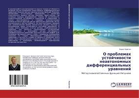В данной работе рассматриваются задачи теории устойчивости решений систем нелинейных неавтономных дифференциальных уравнений. Изложен метод знакопостоянных функций Ляпунова, являющийся естественным обобщением и развитием классического прямого метода Ляпунова. Представлено три основных подхода формирования теорем об устойчивости, асимптотической устойчивости (локальной и глобальной), а также неустойчивости в терминах знакопостоянных вспомогательных функций: метод предельных уравнений, метод декомпозиции и метод Сейберта. На многочисленных примерах дан сравнительный анализ результатов разного подхода в исследования задач устойчивости состояний равновесия. В основу книги положены статьи автора, опубликованные в журналах, она является продолжением исследований, представленных в монографии автора «Устойчивость дифференциальных уравнений» издательством LAP LAMBERT. Для понимания материала книги в главе 1 приведены необходимые сведения по теории обыкновенных дифференциальных уравнений, в частности, теории устойчивости движения. Книга может быть рекомендована студентам, аспирантам, научным работникам и инженерам, занимающимися прикладными вопросами математики.
Купить- ISBN-13: 978-3-659-66475-5
- Опубликовано: 2015-01-06
- Количество страниц: 276
- Авторы: Калитин Б. С.
- Категории: монография
- Ключевые слова: устойчивость, функции Ляпунова, система неавтономных дифференциальных уравнений
Устойчивость неавтономных дифференциальных уравнений
Минск: БГУ
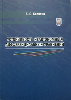Изложен метод знакопостоянных функций Ляпунова применительно к системам обыкновенных дифференциальных уравнений, явно зависящих от времени. Приведен сравнительный анализ результатов разного подхода в формировании теорем метода функций Ляпунова для исследования задачи устойчивости состояний равновесия.
- ISBN-13: 978-985-518-936-8
- Опубликовано: 2013
- Количество страниц: 227
- Авторы: Калитин Б. С.
- Категории: монография
Устойчивость динамических систем
Метод знакопостоянных функций Ляпунова
LAP Lambert Academic Publishing
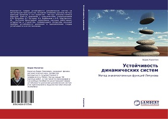Излагается теория устойчивости динамических систем на метрическом пространстве. Основное внимание уделено методу функций Ляпунова и его развитию - методу знакопостоянных функций. Дается сравнение с классическими утверждениями А.М. Ляпунова, Н.Г Четаева, Е.А. Барбашина и Н.Н. Красовского, Ж. Ля-Салля. Монография адресована научным работникам, аспирантам и студентам, занимающимся вопросами изучения проблем устойчивости движения и приложениями теории устойчивости в естествознании.
Купить- ISBN-13: 978-3-659-31775-0
- Опубликовано: 2013-01-04
- Количество страниц: 268
- Авторы: Калитин Б. С.
- Категории: монография
- Ключевые слова: устойчивость, динамическая система, метрическое пространство, функции Ляпунова
Устойчивость динамических систем
Качественная теория
LAP Lambert Academic Publishing
 В монографии излагаются качественные методы исследования траекторий в окрестности замкнутых инвариантных множеств динамических систем на метрическом пространстве, обладающих теми или иными свойствами, подобными свойству устойчивости. Представлен обзор наиболее распространенных понятий, близких классическому определению устойчивости в смысле Ляпунова, исследуется их взаимосвязь и дается анализ основных достижений этого научного направления. Рассматриваются как локальные, так и глобальные задачи общей теории устойчивости. Книга предназначена для научных работников, аспирантов и студентов, занимающихся вопросами устойчивости динамических систем.
В монографии излагаются качественные методы исследования траекторий в окрестности замкнутых инвариантных множеств динамических систем на метрическом пространстве, обладающих теми или иными свойствами, подобными свойству устойчивости. Представлен обзор наиболее распространенных понятий, близких классическому определению устойчивости в смысле Ляпунова, исследуется их взаимосвязь и дается анализ основных достижений этого научного направления. Рассматриваются как локальные, так и глобальные задачи общей теории устойчивости. Книга предназначена для научных работников, аспирантов и студентов, занимающихся вопросами устойчивости динамических систем.
- ISBN-13: 978-3-659-16041-7
- Опубликовано: 2012-06-17
- Количество страниц: 276
- Авторы: Калитин Б. С.
- Категории: монография
Устойчивость равновесия конкурентного рынка
Динамическая модель рынка
LAP Lambert Academic Publishing
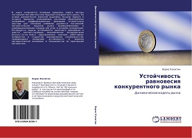В книге излагаются основные принципы нового метода построения математиче-ских моделей конкурентного рынка. На основе динамических аналогий выделены мо-дели первого и второго порядков, описываемые системами обыкновенных нелинейных дифференциальных уравнений относительно вектора цен. Основное внимание уделяется построению математических моделей рынка взаимозаменяемых и взаимодополняющих товаров или услуг в условиях конкуренции. Исследуется задача устойчивости рыночного равновесия и дается соответствующая экономическая интерпретация результатов. Книга предназначена научным работникам, аспирантам и студентам экономических специальностей, занимающихся вопросами устойчивости в моделях математической экономики и специалистам по прикладной математике.
Купить- ISBN-13: 978-3-8484-8206-1
- Опубликовано: 2012-04-27
- Количество страниц: 168
- Авторы: Калитин Б. С.
- Категории: монография
- Ключевые слова: рынок, устойчивость, конкуренция, экономическое равновесие, динамическая модель
Устойчивость дифференциальных уравнений
Метод знакопостоянных функций Ляпунова
LAP Lambert Academic Publishing
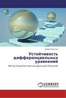Книга содержит систематическое описание метода знакопостоянных функций Ляпунова, разрабатываемого автором для решения задач устойчивости движения. Предлагаемый подход является естественным развитием и обобщением прямого метода Ляпунова в исследовании устойчивости состояния равновесия различных динамических моделей механики, экономики, биологии, а также теории автоматического регулирования и задач стабилизации. В главе 1 представлено теоретическое обоснование основных теорем метода знакопостоянных вспомогательных функций относительно устойчивости, асимптотической устойчивости, глобальной асимптотической устойчивости и неустойчивости точек покоя. В главе 2 включены примеры иллюстрации метода, опробованные на широком классе моделей естествознания. Книга рассчитана на математиков и инженеров-исследователей теории устойчивости движения, занимающихся вопросами построения и анализа динамических моделей в различных областях научного познания. Она также может быть полезной аспирантам и студентам университетов, выбравших специальность одного из направлений прикладной математики.
Купить- ISBN-13: 978-3-8484-2197-8
- Опубликовано: 2012-03-01
- Количество страниц: 232
- Авторы: Амелькин В. В., Калитин Б. С.
- Категории: монография
- Ключевые слова: устойчивость, обыкновенные дифференциальные уравнения, знакопостоянные функции Ляпунова
Математические модели первого порядка конкуренткого рынка
Минск: БГУ
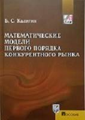Изложены принципы нового построения математических моделей первого порядка микроэкономики, описываемые системами обыкновенных нелинейных дифференциальных уравнений. Основное внимание уделено построению математических моделей рынка взаимозаменяемых и взаимодополняемых товаров или услуг в условиях конкуренции, а также монопольного рынка и рынка двух товаров. Исследованы задачи устойчивости рановесия и оптимальной налоговой политики, приведена экономическая интерпретиция результатов.
Для студентов высших учебных заведений, обучающихся по специальности "Экономическая кибернетика".
- ISBN-13: 978-985-518-454-7
- Опубликовано: 2011
- Количество страниц: 131
- Авторы: Калитин Б. С.
- Категории: монография
Нелинейные изохронные и импульсные колебания в динамических системах второго порядка
Минск: БГУ
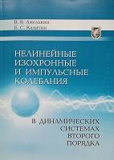Монография посвящена вопросам теории нелинейных изохронных и импульсных колебаний динамических систем с одной степенью свободы, которые еще не получили достаточного освещения в монографической и учебной литературе. Показано, как могут быть использованы теоретические положения при решении практических задач.
Книга рассчитана на специалистов в области теории дифференциальных уравнений и теории нелинейных колебаний. Будет полезна студентам и аспирантам физико-математических и физико-техничеких специальностей.
- ISBN-13: 978-985-485-968-2
- Опубликовано: 2008
- Количество страниц: 147
- Авторы: Амелькин В. В., Калитин Б. С.
- Категории: монография
Экономические модели второго порядка конкурентного рынка
Минск: БГУ
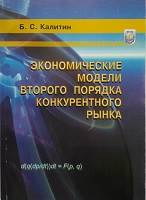В монографии излагаются основные принципы нового метода построения матемитических моделей второго порядка микроэкономики, описываемые системами обыкновенных нелинейных дифференциальных уравнений. Основное внимание уделяется рынку взаимозаменяемых товаров типа "эффективная конкунеция" и монопольному рынку. Для каждой модели исследуется задача устойчивости равновесия и дается соответствующая экономическая интерпретация полученных результатов.
Предназначено для студентов экономических специальностей, аспирантов и научных работников, занимающихся вопросами устойчивости конкурентного равновесия в моделях математической экономики.
- ISBN-13: 978-985-485-694-0
- Опубликовано: 2007
- Количество страниц: 95
- Авторы: Калитин Б. С.
- Категории: монография
Изохронные и импульсные колебания двумерных динамических систем
Москва: КомКнига
 Монография посвящена вопросам теории изохронных и импульсных колебаний динамических систем с одной степенью свободны, которые еще не получили достаточного освещения в монографической и учебной литературе. Показывается, как теоретичские положения могут быть использованы в решении практических задач.
Монография посвящена вопросам теории изохронных и импульсных колебаний динамических систем с одной степенью свободны, которые еще не получили достаточного освещения в монографической и учебной литературе. Показывается, как теоретичские положения могут быть использованы в решении практических задач.
Книга расчитана на специалистов в области теории дифференциальных уравнений и теории колебаний. Она будет полезна студентам и аспирантам физико-математических и физико-технических специальностей.
- ISBN-10: 5-484-00452-7
- Опубликовано: 2006
- Количество страниц: 208
- Авторы: Амелькин В. В., Калитин Б. С.
- Категории: монография
Задачи по теоретической механике
Минск: БГУ
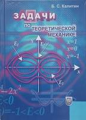Пособие содержит задачи по специальным разделам теоретической механики: кинематика, данамика, аналитическая механика, проблема двух тел, устойчвость равновесия. В каждом параграфе кратко изложены необходимые теоретические сведения.
Предназначено для студентов специальности "Прикладная математика".
- ISBN-13: 978-985-485-377-2
- Опубликовано: 2005
- Количество страниц: 199
- Авторы: Калитин Б. С.
- Категории: учебное пособие
Математические модели экономики
Минск: БГУ
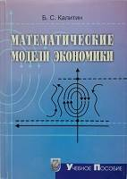В учебном пособии излагаются математические модели микро- и макро-экономики, описываемые системами обыкновенных дифференциальных уравнений. Основное внимание уделяется методам построения моделей и исследованию задач устойчивости экономического равновесия. Для понимания данного курса в первой главе приводятся все необходимые сведения теории дифференциальных уравнений и теории устойчивости по Ляпунову.
Предназначено для студентов экономических специальностей, аспирантов и научных работников, занимающихся вопросами устойчивости конкурентного равновесия в моделях математической экономики.
- ISBN-13: 978-985-485-077-3
- Опубликовано: 2004
- Количество страниц: 182
- Авторы: Калитин Б. С.
- Категории: учебное пособие
Качественная теория устойчивости движения динамических систем
Минск: БГУ
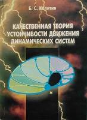В монографии излагаются качественные методы исследования поведения траекторий в окрестности замкнутых инвариантных множеств, обладающих различными устойчивоподобными свойствами. Рассматриваются как локальные, так и глобальные задачи теории динамических систем на метрическом пространстве.
Книга адресована научным работникам, аспирантам и студентам, занимающимся вопросами устойчивости динамических систем. Может быть использована для чтения специальных курсов студентам специальности "Прикладная математика".
- ISBN-13: 978-985-445-687-0
- Опубликовано: 2002
- Количество страниц: 198
- Авторы: Калитин Б. С.
- Категории: монография